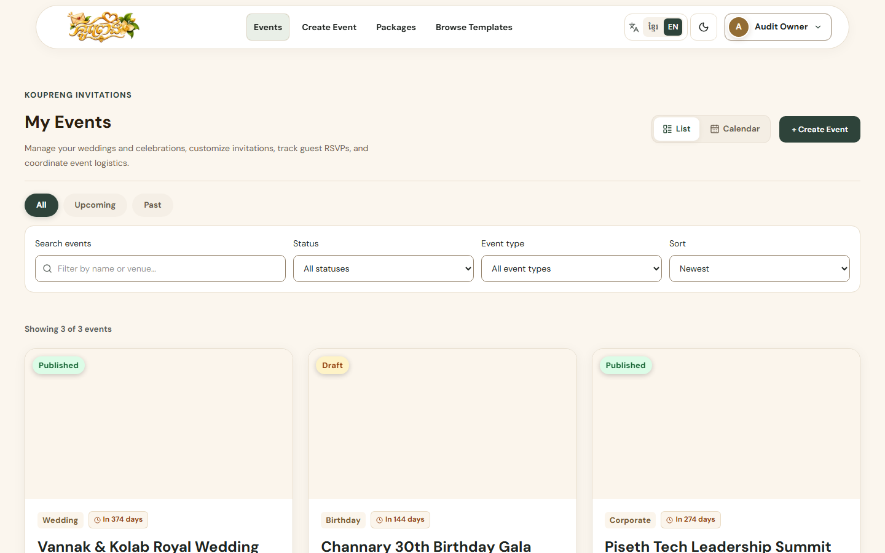
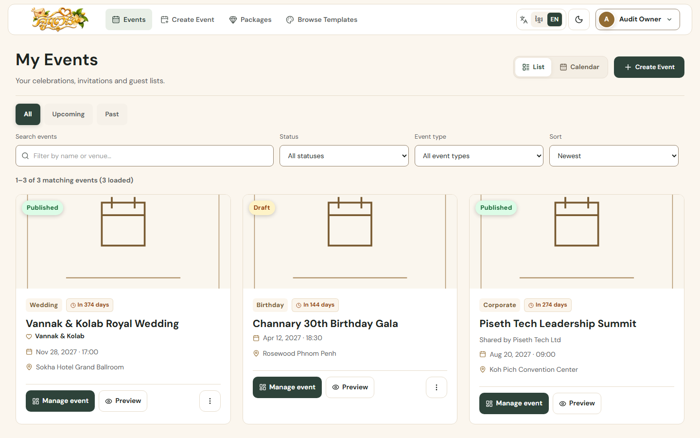
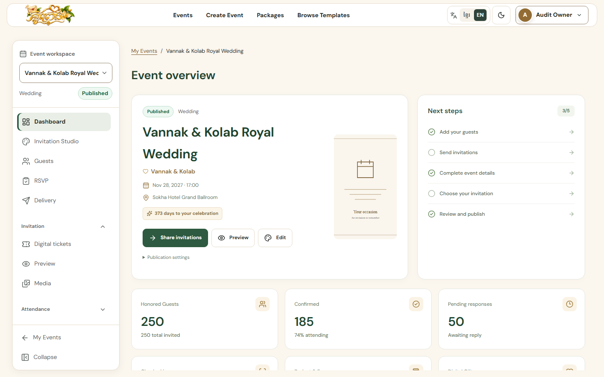
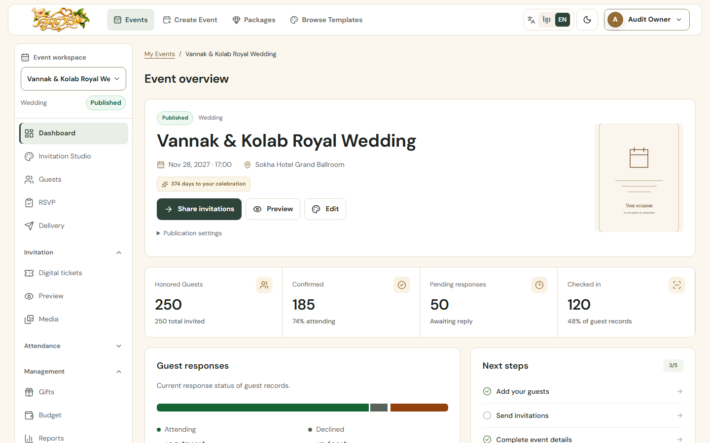

Independent synthetic owner fixture; event 42, 19 November 2026, English/light. The outlines annotate title/toolbar/card or sidebar/hero/metrics. Original captures remain unmodified. Before uses the preserved pre-edit production preview; after uses final reviewed assets. Desktop baseline is Chromium only.




Negative top delta means the element begins higher. These are measured positions, not a universal wasted-space score.
| Case | Element | Before top | After top | Top delta | Width delta |
|---|---|---|---|---|---|
| list 1440 | .host-header-container | 8.0 | 8.0 | +0.0 | +83.2 |
| list 1440 | .events-page-header | 143.2 | 96.0 | -47.2 | +16.0 |
| list 1440 | .events-filters-container | 314.8 | 212.9 | -101.9 | +16.0 |
| list 1440 | .event-card | 566.5 | 399.5 | -167.1 | +5.3 |
| list 1920 | .host-header-container | 8.0 | 8.0 | +0.0 | +448.0 |
| list 1920 | .events-page-header | 160.0 | 96.0 | -64.0 | +96.0 |
| list 1920 | .events-filters-container | 331.6 | 212.9 | -118.7 | +96.0 |
| list 1920 | .event-card | 583.4 | 399.5 | -183.9 | +58.7 |
| overview 1440 | .host-header-container | 8.0 | 8.0 | +0.0 | +0.0 |
| overview 1440 | .event-workspace-sidebar | 96.0 | 88.0 | -8.0 | -16.0 |
| overview 1440 | .overview-hero | 225.6 | 200.8 | -24.8 | +458.1 |
| overview 1440 | .overview-metrics | 689.2 | 541.6 | -147.7 | +36.0 |
| overview 1920 | .host-header-container | 8.0 | 8.0 | +0.0 | +0.0 |
| overview 1920 | .event-workspace-sidebar | 96.0 | 88.0 | -8.0 | -16.0 |
| overview 1920 | .overview-hero | 225.6 | 200.8 | -24.8 | +636.9 |
| overview 1920 | .overview-metrics | 638.1 | 541.6 | -96.5 | +36.0 |